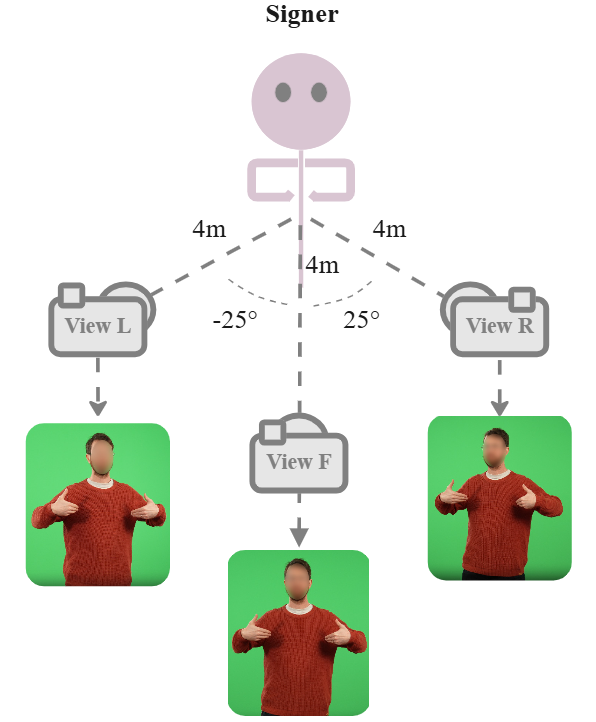
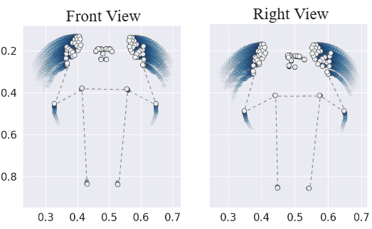
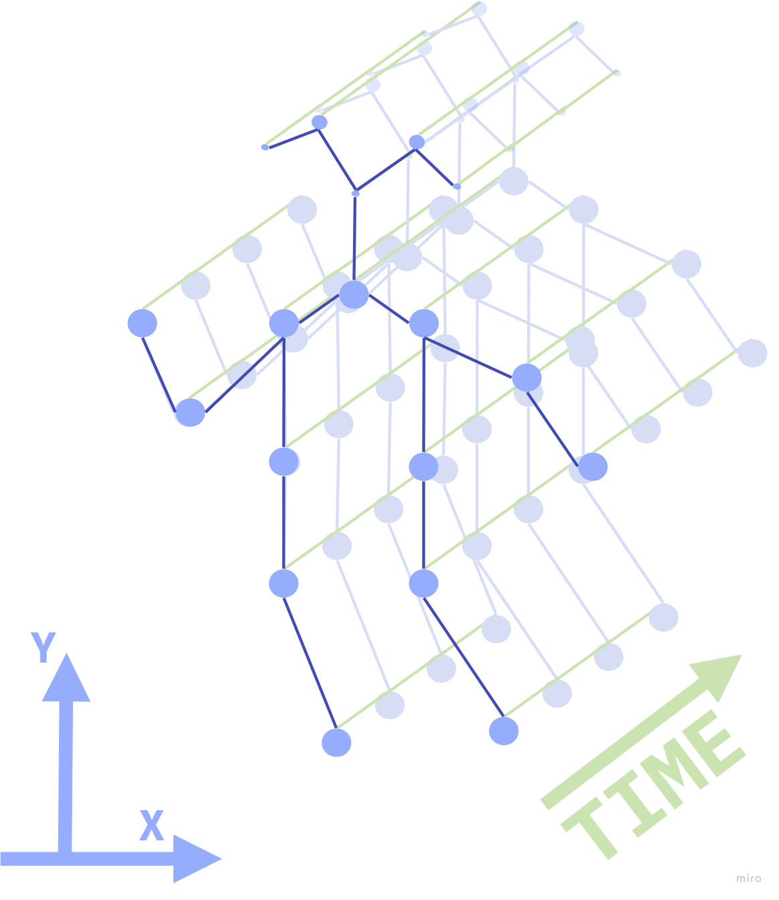
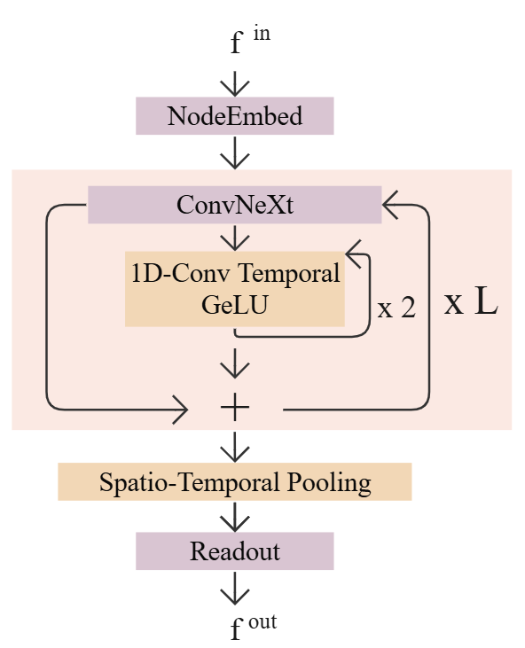

SignLab Amsterdam & AMLab, University of Amsterdam
Sign Language Processing (SLP) provides a foundation for a more inclusive future in language technology; however, the field faces several significant challenges that must be addressed to achieve practical, real-world applications. This work addresses multi-view isolated sign recognition (MV-ISR), and highlights the essential role of 3D awareness and geometry in SLP systems. We introduce the NGT200 dataset, a novel spatio-temporal multi-view benchmark, establishing MV-ISR as distinct from single-view ISR (SV-ISR). We demonstrate the benefits of synthetic data and propose conditioning sign representations on spatial symmetries inherent in sign language. Leveraging an SE(2)-equivariant model improves MV-ISR performance by 8–22% over the baseline.
NGT200 contains pose and video data for 200 common NGT signs recorded from three calibrated viewpoints (−25°, 0°, +25°) by 3 Deaf signers and a retargeted synthetic avatar, yielding a multi-view benchmark designed explicitly for viewpoint-invariant sign recognition research.


| Property | Value |
|---|---|
| Signs | 200 NGT glosses |
| Viewpoints | 3 (left −25°, front 0°, right +25°) |
| Signers | 3 Deaf human signers + 1 synthetic avatar |
| Landmarks | 75 per frame (Holistic MediaPipe) |
| Modalities | Spatio-temporal pose, video |
| License | CC BY 4.0 |
Pose landmarks are downsampled to a 27-node graph (10 nodes per hand, 7 for overall body position) with spatial edges approximating the human skeletal structure. The graph is used as input to both the SL-GCN baseline and the proposed Temporal-PONITA model.

We propose Temporal-PONITA, an extension of the PONITA architecture augmented with temporal convolution modules. By conditioning representations on SE(2) spatial symmetries (rotations and translations in the image plane), the model reduces the learning burden imposed by viewpoint variation and inter-signer differences.

Models trained solely on frontal views fail to generalise to side views, confirming that MV-ISR is a genuinely distinct task from SV-ISR that cannot be solved by single-view scaling.
| Model | Training views | Top-1 Left | Top-1 Front | Top-1 Right |
|---|---|---|---|---|
| SL-GCN | Front only | 0.09 | 0.49 | 0.23 |
| SL-GCN | All 3 views | 0.46 | 0.49 | 0.47 |
| Temporal-PONITA | All 3 views | 0.54 | 0.59 | 0.55 |
Temporal-PONITA improves over SL-GCN by 8–22% across view conditions and converges 40% faster (145 vs. 357 epochs).
@inproceedings{ranum2024ngt200,
title = {The NGT200 Dataset: Geometric Multi-View Isolated Sign Recognition},
author = {Ranum, Oline and Wessels, David and Otterspeer, Gom{\`e}r and
Bekkers, Erik J. and Roelofsen, Floris and Andersen, Jari I.},
booktitle = {Proceedings of the GRaM Workshop at the 41st International
Conference on Machine Learning (ICML)},
series = {Proceedings of Machine Learning Research},
volume = {251},
publisher = {PMLR},
year = {2024},
url = {https://openreview.net/forum?id=idkNzTC67X}
}